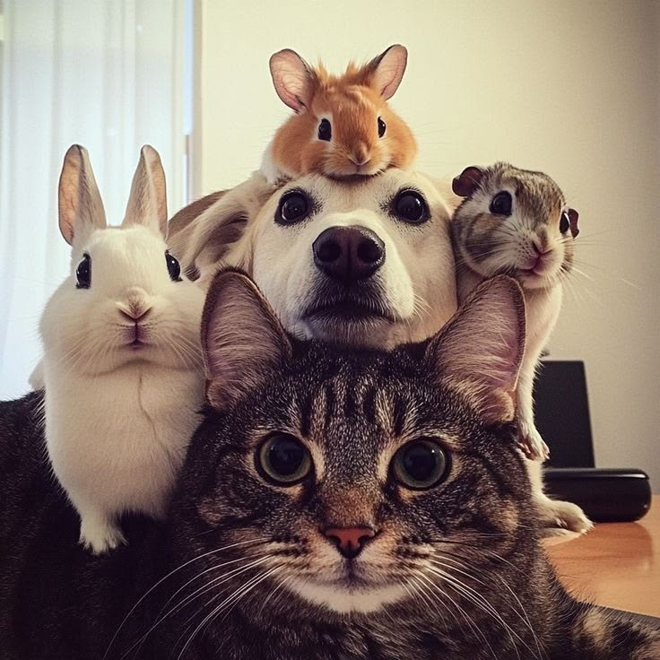
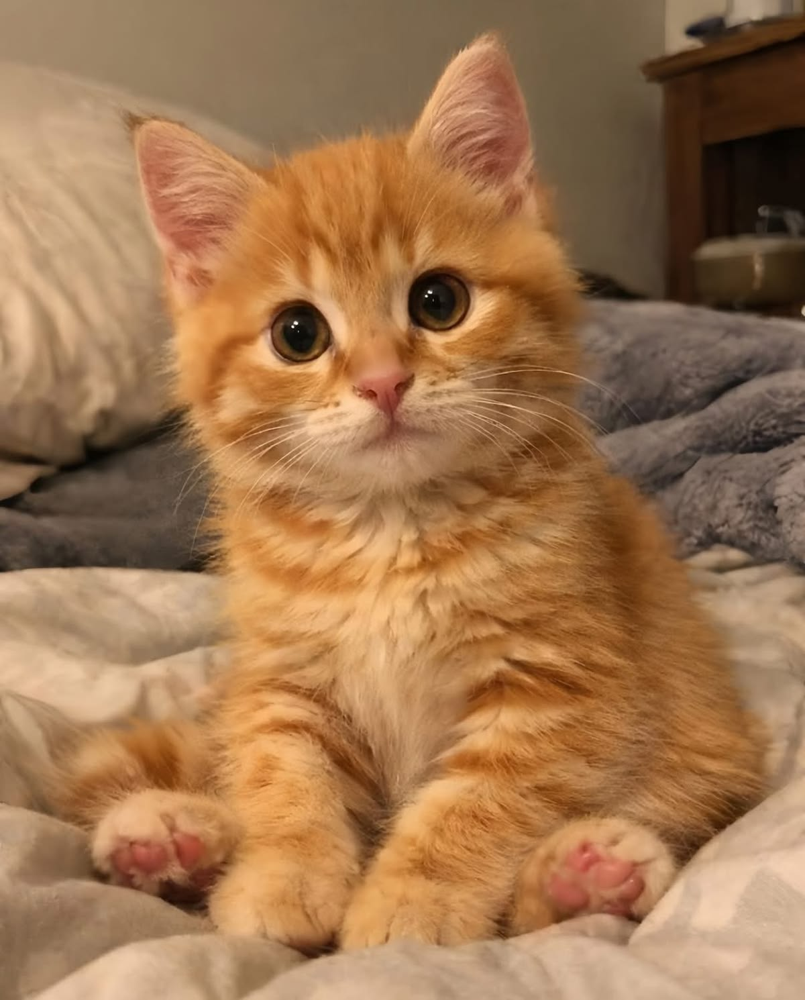
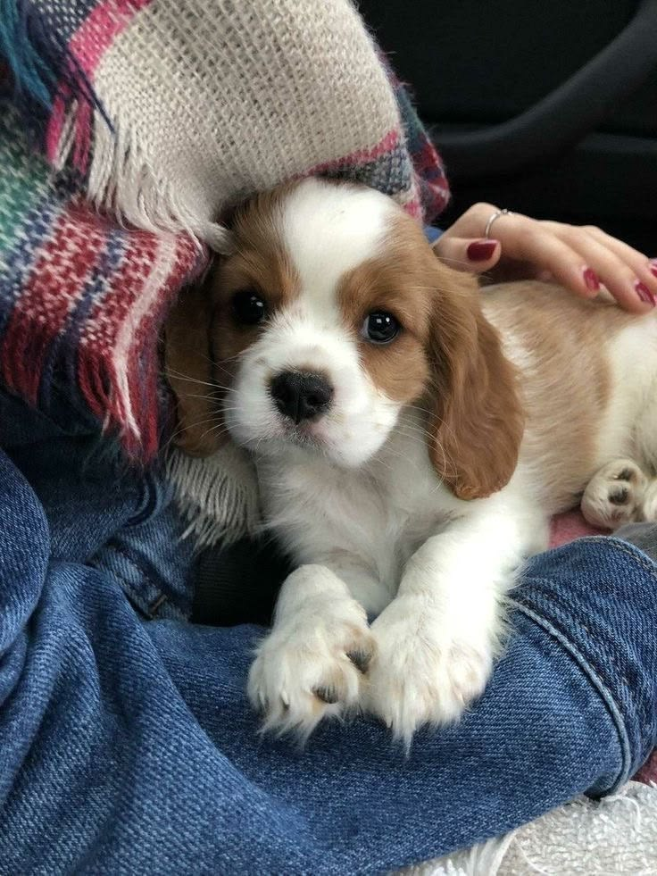
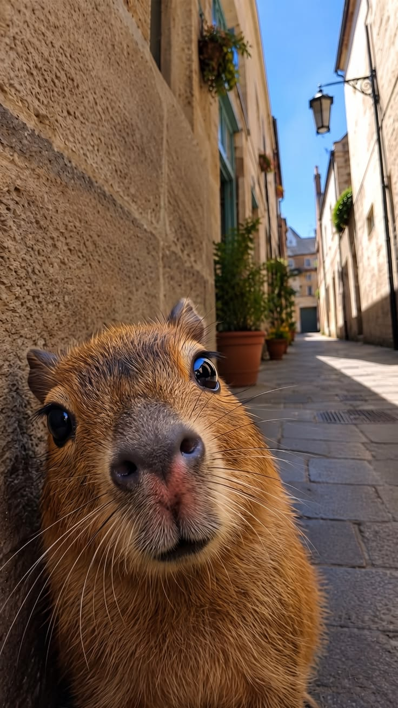
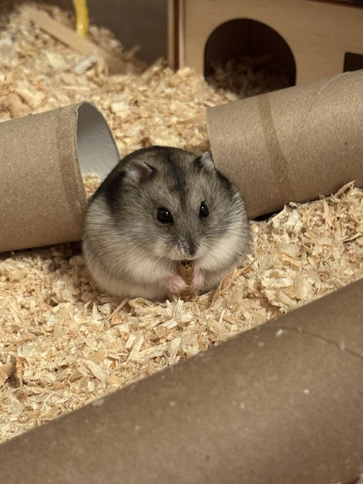
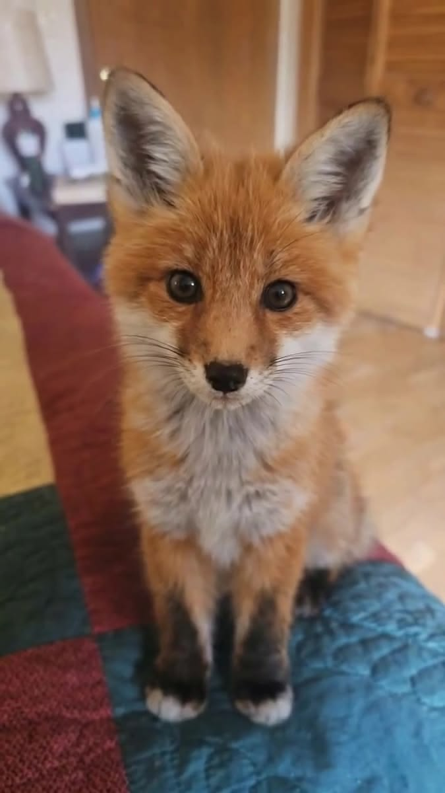
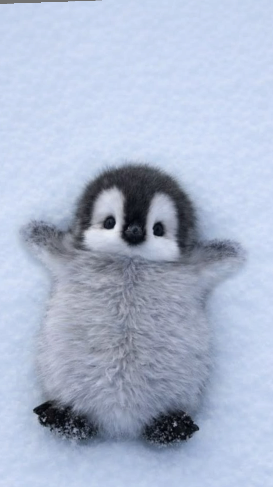
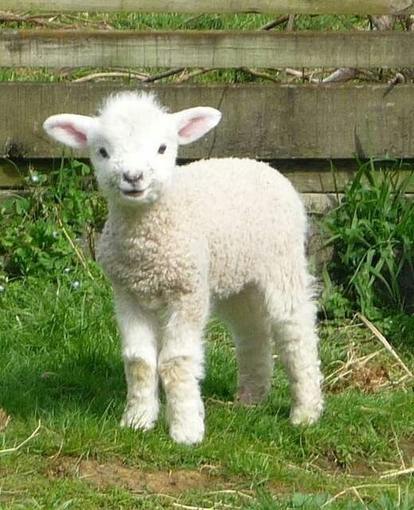

Por: Jujudopix
Bem vindo ao meu blog! Aqui vou compartilhar curiosidades sobre os animais

Por: Jujudopix
Bem vindo ao meu blog! Aqui vou compartilhar curiosidades sobre os animais

Gatos
Os gatos não conseguem sentir o sabor doce porque possuem uma alteração genética que desativa os receptores responsáveis por esse gosto. Como são carnívoros obrigatórios, evoluíram para consumir principalmente carne, sem necessidade de identificar alimentos ricos em açúcar.
Fonte: Chatgpt

Cachorros
Os cachorros também sonham durante a fase REM do sono. Nessa etapa, podem mexer as patas, abanar o rabo ou emitir sons. Acredita-se que revivam experiências do dia a dia, como brincadeiras, passeios e momentos com seus tutores.
Fonte: Chatgpt

Capivaras
As capivaras são excelentes nadadoras e conseguem permanecer submersas por até cinco minutos para escapar de predadores. Seus olhos, orelhas e narinas ficam no topo da cabeça, permitindo que observem o ambiente enquanto permanecem quase totalmente dentro da água.
Fonte: Chatgpt

Hamster
Os hamsters armazenam alimento em bolsas especiais nas bochechas, que podem se expandir bastante. Eles transportam sementes e outros alimentos até a toca, onde criam pequenas reservas para comer depois, um comportamento natural de sobrevivência.
Fonte: Chatgpt

Raposa
As raposas são animais muito inteligentes e adaptáveis. Elas conseguem viver em florestas, desertos e até cidades. Uma curiosidade incrível é que algumas raposas usam o campo magnético da Terra para localizar suas presas, especialmente quando caçam sob neve.
Fonte: Chatgpt

Pinguin
Uma curiosidade sobre os pinguins é que eles não voam, mas são excelentes nadadores. O pinguim-imperador consegue mergulhar a grandes profundidades e permanecer debaixo d’água por vários minutos, usando suas asas como nadadeiras para perseguir peixes e escapar de predadores.
Fonte: Chatgpt

Carneiro
Os carneiros têm uma excelente memória e conseguem reconhecer rostos, inclusive de outros carneiros e pessoas. Eles também vivem em grupos e desenvolvem fortes laços sociais. Quando separados de seus companheiros, podem demonstrar sinais de estresse e procurar reencontrá-los.
Fonte: Chatgpt